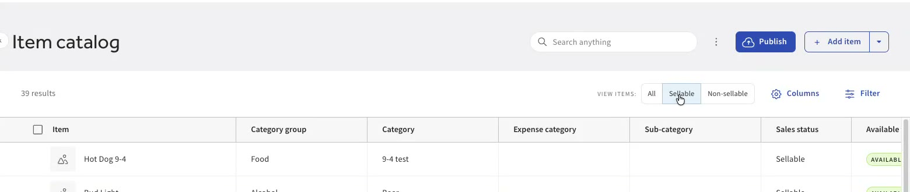
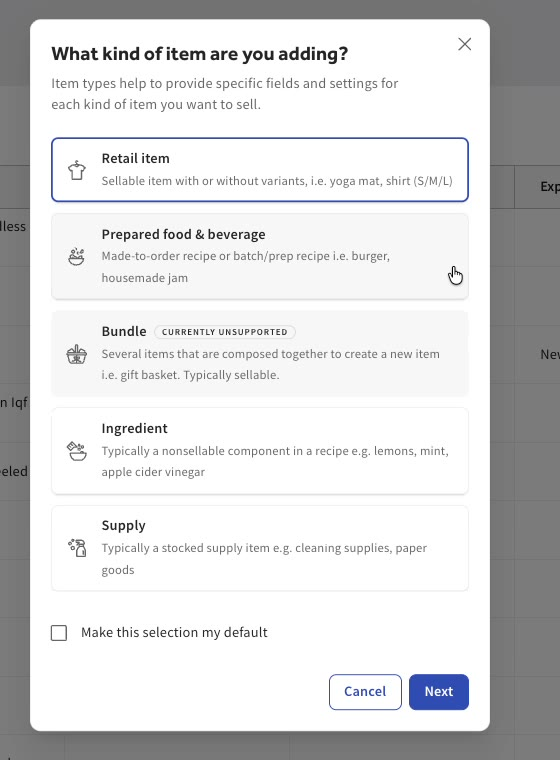
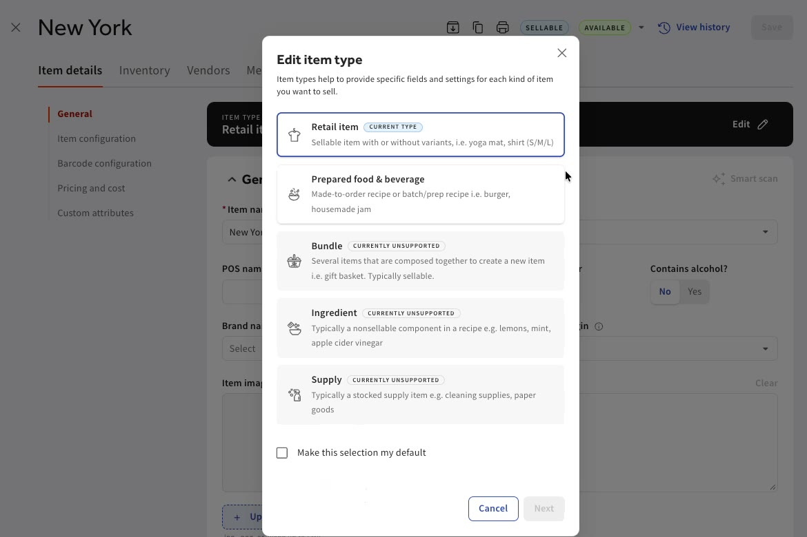
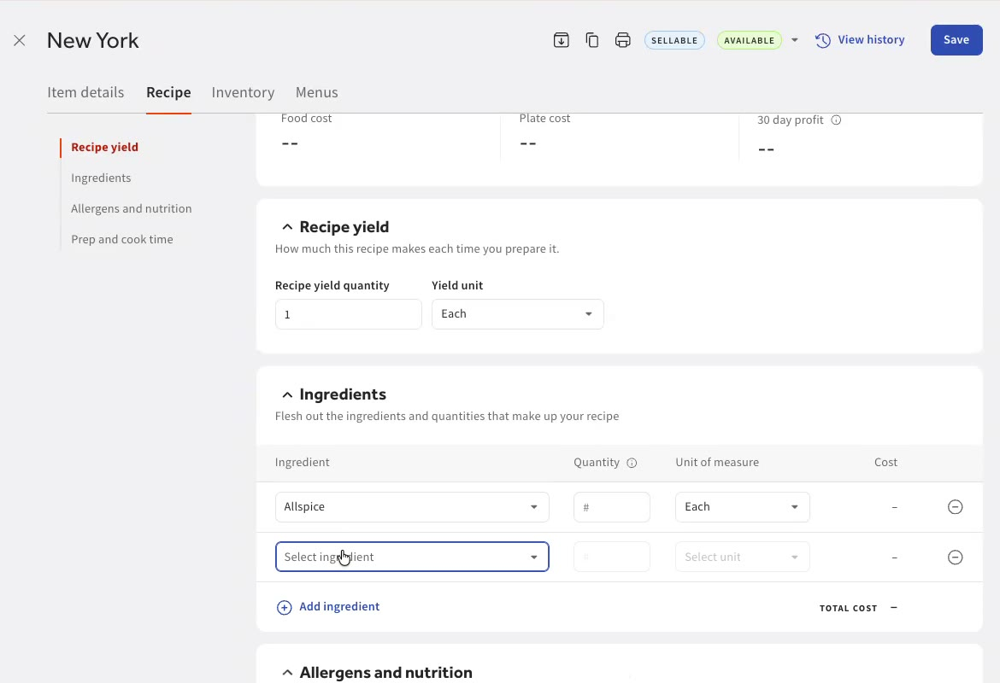
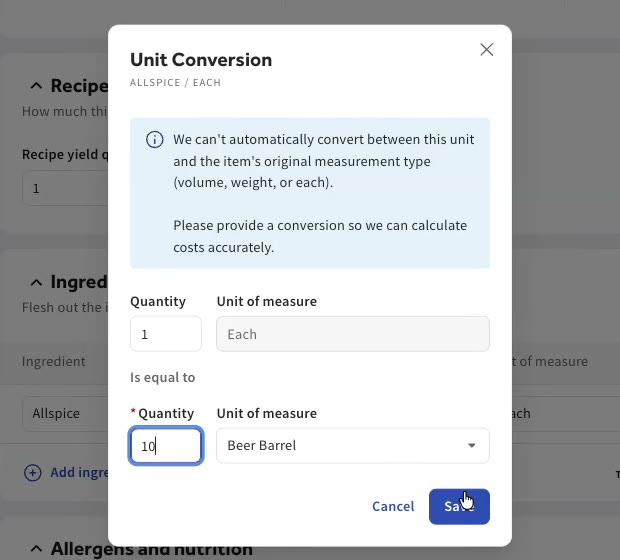
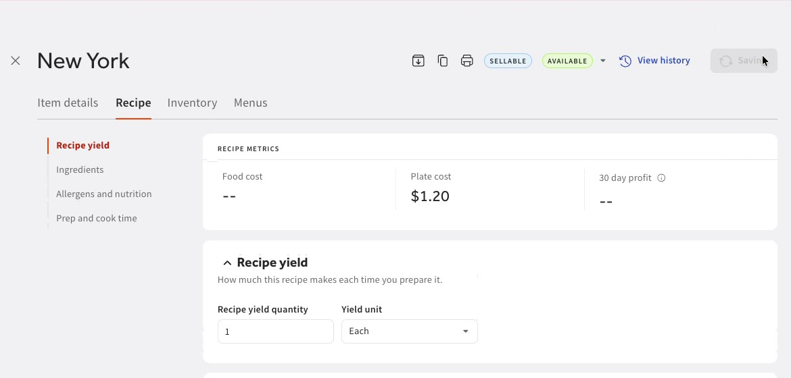
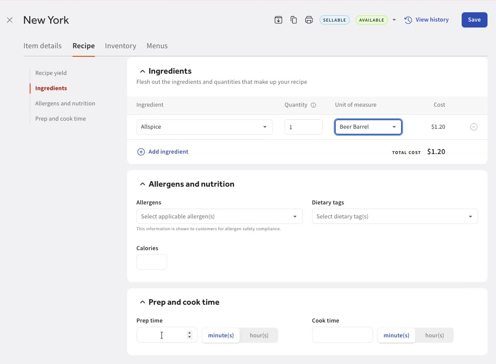
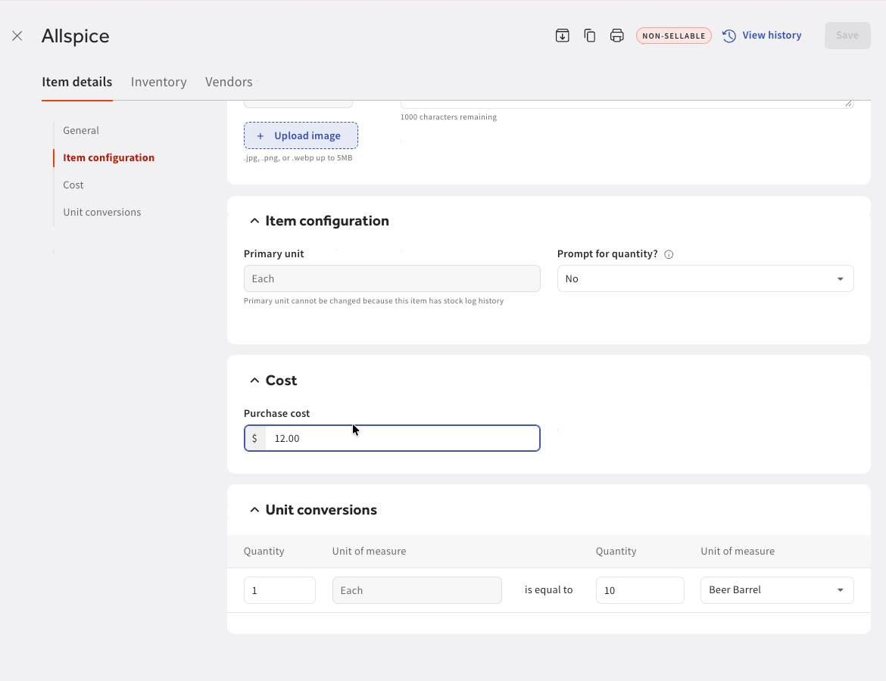
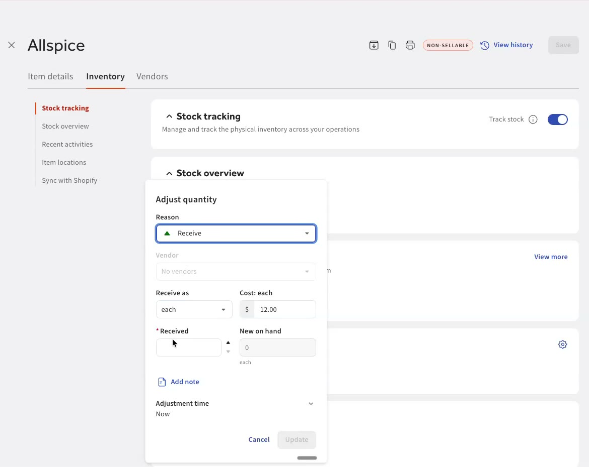
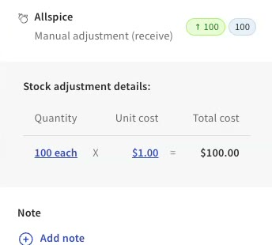

Define what goes into each menu item, so selling it depletes ingredients and keeps your costs accurate.
Build a recipe once. Every sale of that item depletes its ingredients and rolls their cost up into cost of goods sold.
The item catalog is your hub for everything you sell or stock. Use the quick filters at the top to switch views:

Only Prepared food & beverage items can have recipes today. When you add a new item, choose that type.
Already have a menu item? It starts as a retail item. Open it, choose Edit next to Item type, and switch it to Prepared food & beverage. A Recipe tab then appears on the item.


Open the Recipe tab and fill in:
We recommend using ingredients, but the system is flexible. Any item in your system can be a component of another item. The one rule: an item can't contain itself.

Each ingredient line has its own unit of measure. If you choose a unit that doesn't match how the ingredient is stored, you'll be asked for a unit conversion. Enter how the two units relate and save.
Toast then calculates the ingredient's cost and rolls it up into the item's plate cost.


Tag allergens and dietary tags on the recipe, and they flow through to your online ordering systems.
Restaurants can also set prep and cook time. These are the same times that decide when items fire to the kitchen, so an item with a longer prep time can fire a little earlier, depending on your settings. Not a restaurant? You can ignore this field.

If a recipe's cost doesn't look right, open the ingredient itself. Its Cost section shows the purchase cost, and Unit conversions lists every conversion you've set, so you can go back and update them.

When you sell a recipe item, Toast depletes all of its ingredients accordingly. The ingredient's cost then feeds your cost of goods sold:
Keep this in mind when you fix any data in the system.


Mark the item as prepared food & beverage, build the recipe, and track stock on your ingredients. From then on, every sale depletes ingredients and keeps your cost of goods sold up to date.